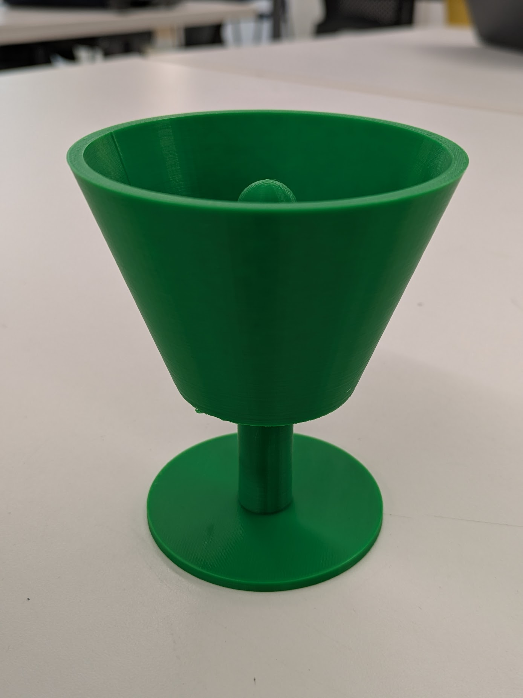
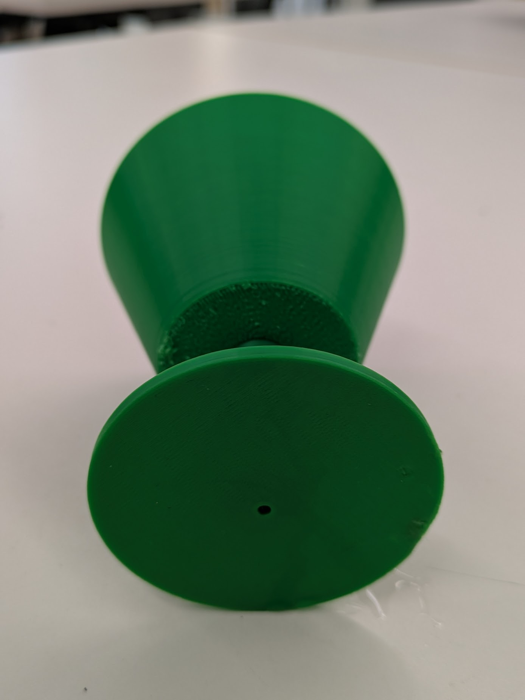
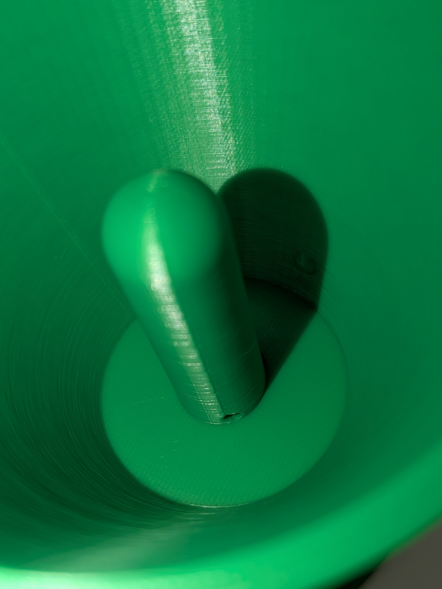

<div class="textcontainer">
<p class="margin"> </p>
<h3>Week 5: 3D Design & Printing</h3>
<h4>Assignment: Model and 3D print something</h4>
<a id="btn" href="./pythagoras cup v11.f3d" download>3D Model File
</a>
<a id="btn" href="./pythagoras cup v11.stl" download>STL File
</a>
<a id="btn" href="./ChristopherLapopSalazar pythagoras cup v11_0.15mm_PLA_MK3S_9h6m.gcode" download>Sliced gcode
</a>
<p class="margin"> </p>



<p class="margin"> </p>
<a id="btn" href="./ChristopherLapopSalazarPlush.zip" download>Revopoint Plush Scan
</a>
<p class = "margin"></p>
<img src="./plushscanning.jpg" width="716" height="537" alt="Initial Plush scan">
<p class = "margin"></p>
<h4>Final Project updates </h4>
<p class = "margin"></p>
At the moment I'm confident that I've whittled down my options to ideas 1 and 3. While idea 1 has value in developing a program that focuses on information gathering and interpretation, idea 3 is more involved in the game-development track.
If I can find both an effective print of a kalimba over this weekend as well as a speaker compatible with the microcontroller, I'm interested in going for idea 1. Otherwise, I will begin and hopefully complete the casing for idea 3 this weekend.
<p class = "margin"></p>
</div>